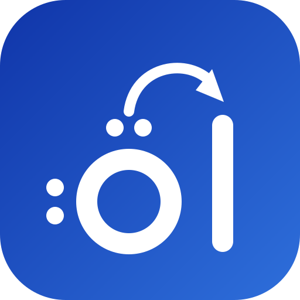
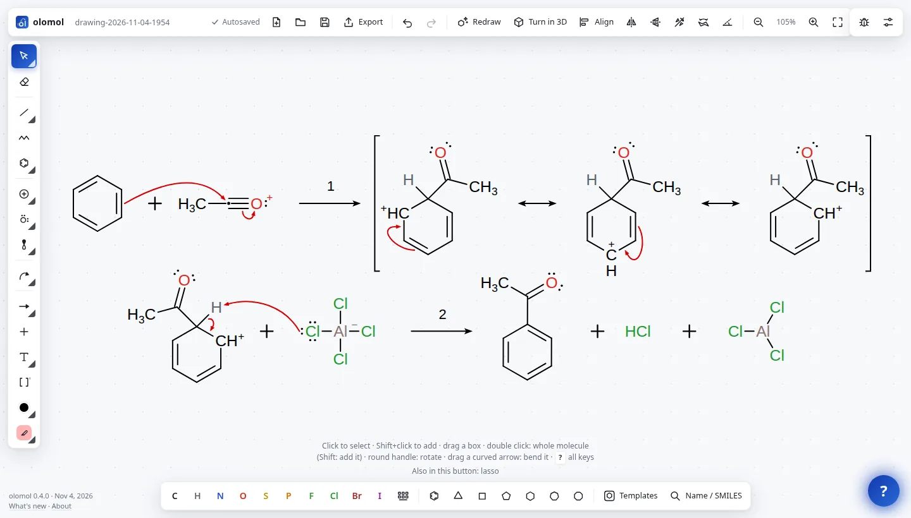
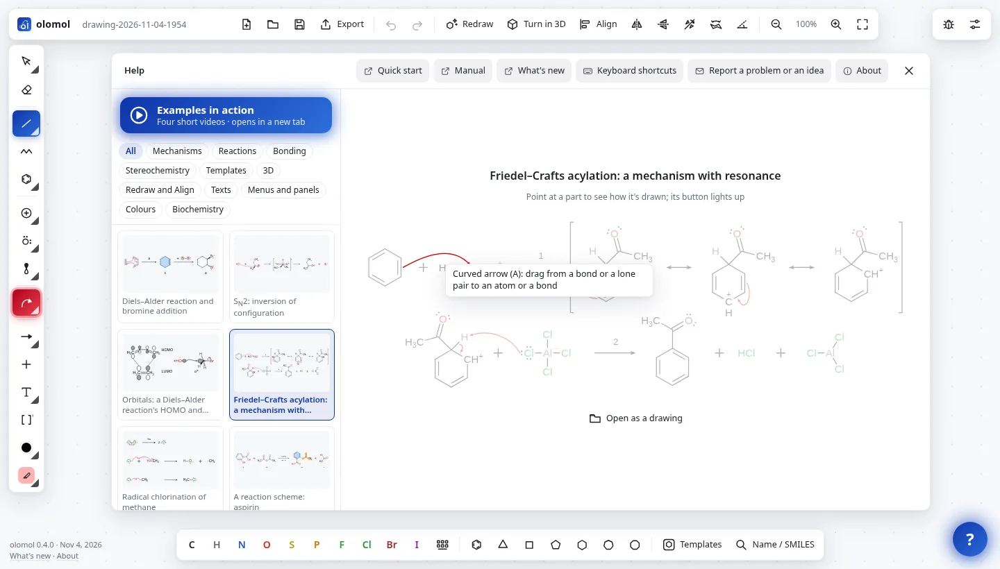

olomol
Kreslení chemických struktur, reakcí a mechanismů, zdarma v prohlížeči Drawing chemical structures, reactions and mechanisms, free in your browser Chemische Strukturen, Reaktionen und Mechanismen zeichnen, kostenlos im Browser
Co je olomolWhat olomol isWas olomol ist
olomol je program zdarma na kreslení chemických struktur, reakcí a mechanismů se zahnutými šipkami. Je pro výuku chemie i pro každého, kdo chemii kreslí: na přednášky a prezentace, do skript, cvičení, písemek, závěrečných prací i publikací.
Běží celý ve webovém prohlížeči. Nic se neinstaluje a není potřeba žádný účet. Kresby zůstávají ve vašem počítači: v prohlížeči a v souborech, kam si určíte. Na PubChem jde jen název nebo molekula, které tam sami vyhledáte. Jednou otevřený olomol funguje i bez internetu a jde nainstalovat jako aplikace.
olomol vzniká na Katedře fyzikální chemie Univerzity Palackého v Olomouci. Mluví česky, anglicky a německy.
olomol is a free program for drawing chemical structures, reactions and curved-arrow mechanisms. It is made for chemistry education and for anyone who draws chemistry: lectures and slides, handouts, exercises, exams, theses and publications.
It runs entirely in the web browser. Nothing is installed and no account is needed. Drawings stay on your computer: in the browser and in files wherever you choose. Only a name or a molecule you look up on PubChem yourself is sent there. Once opened, olomol also works offline, and it can be installed as an app.
olomol is made at the Department of Physical Chemistry, Palacký University Olomouc, Czech Republic. It speaks Czech, English and German.
olomol ist ein kostenloses Programm zum Zeichnen chemischer Strukturen, Reaktionen und Mechanismen mit gebogenen Pfeilen. Es ist für die Chemielehre gemacht und für alle, die Chemie zeichnen: für Vorlesungen und Folien, Skripte, Übungen, Klausuren, Abschlussarbeiten und Veröffentlichungen.
Es läuft vollständig im Webbrowser, ohne Installation und ohne Konto. Zeichnungen bleiben auf dem eigenen Rechner: im Browser und in selbst gewählten Dateien. Nur ein Name oder Molekül, das man selbst auf PubChem sucht, wird dorthin geschickt. Einmal geöffnet, funktioniert olomol auch offline und lässt sich als App installieren.
olomol entsteht am Lehrstuhl für Physikalische Chemie der Palacký-Universität Olomouc (Tschechien). Die Oberfläche gibt es auf Tschechisch, Englisch und Deutsch.
Jak začítGetting startedErste Schritte
K tisku v PDF: rychlý start · příručka
For printing, as PDF: Quick start · Manual
Zum Ausdrucken, als PDF: Quick start · Manual
Co umíWhat it doesWas es kann
Mechanismy
- Volné elektronové páry a nepárové elektrony, spočítané z chemie; atom bez vazeb jako Lewisův symbol, až se čtyřmi nepárovými elektrony.
- Zahnuté šipky a půlšipky přichycené k atomům, vazbám a párům; půlšipka puštěná mezi dva atomy vytvoří novou vazbu (zahnutá šipka také, se Shiftem), takže se radikály spojí jako v učebnici. Když se kresba pohne, šipky jdou s ní.
- Orbitaly p, hybridní a s s fázemi a čarami překryvu, třeba HOMO a LUMO Dielsovy–Alderovy reakce.
- Rezonanční struktury, tranzitní stavy, závorky, náboje i δ+ a δ−; rovnováha posunutá na jednu stranu, přeškrtnutá šipka pro reakci, která neproběhne.
Konformace
- Židličky, které znají svou stereochemii: ze šablony i nakreslená ručně se židlička čte jako stereoizomer, který ukazuje.
- Plochý kruh nebo Haworthova projekce se jedním kliknutím změní na židličku, každá skupina axiálně nebo ekvatoriálně podle svého klínu; překlopení z ní udělá druhou židličku a pro podklady nakreslí obě s ⇌; otočení židličky ji pootočí o třetinu otáčky a skupiny zůstanou axiální či ekvatoriální.
- Newmanovy projekce jsou skutečné molekuly: eliminaci E2 nakreslíte šipkami rovnou v projekci, torzní úhel nastavíte v panelu.
Chemie, kterou zná
- Sumární vzorec, molární a přesná hmotnost, elementární analýza, ionty pro HRMS.
- R/S a E/Z, číslování podle IUPAC i s důvody, SMILES, InChI a odkaz na PubChem.
- Každé překreslení, překlopení a pohled ve 3D kontroluje RDKit, takže se molekula ani její R/S za vašimi zády nezmění; když ji změní vaše úprava, program upozorní a označí atom, který nesedí.
Kreslení
- Vazby včetně klínů, šrafovaných klínů, vlnovek, koordinačních a vodíkových vazeb; řetězce a kruhy.
- Zkratky (Ph, Boc, OMe), které jdou rozkreslit a zase zkrátit; izotopy (13C, D).
- Texty se vzorci (H₂SO₄, Fe³⁺); reakční, rovnovážné, rezonanční a retrosyntetické šipky s podmínkami a činidly nad a pod šipkou.
Šablony a struktury z názvů
- Kruhy, funkční skupiny, židličkové konformace, Newmanovy, Fischerovy a Haworthovy projekce, komplexy, aminokyseliny, cukry, nukleové báze, činidla a rozpouštědla.
- Hledání podle části: ?ester najde šablony s esterem.
- Struktura z názvu, SMILES nebo InChI (názvy přes PubChem).
Rozvržení a 3D
- Překreslit nabídne několik úhledných kreseb na výběr, celé molekuly i jen vybrané části.
- Otočit ve 3D: molekulu nebo komplex otočíte myší a nakreslíte tak, jak je vidíte, s klíny, které zachovají R/S, E/Z i Λ/Δ; nakreslená konformace zůstane (axiální skupina axiální) a tyčinkový model ukáže skutečný tvar se všemi vodíky.
- Komplexy kovů počítá silové pole: porfyriny jsou rovné, chelaty sedí, kde mají, a Λ a Δ program pojmenuje.
- Zarovnání, rovnoměrné rozmístění, mřížka a reakční schéma do řádku.
Soubory
- Ukládá KET (otevře ho i Ketcher); exportuje molfile, SDF, SMILES, InChI a XYZ (3D), obrázky SVG a PNG.
- Obrázek do Wordu, PowerPointu a Google Docs přes Ctrl+Shift+C; odkaz, který nese celou kresbu.
Mechanisms
- Lone pairs and unpaired electrons, counted from the chemistry; an atom without bonds as a Lewis symbol, with up to four unpaired electrons.
- Curved arrows and fishhooks tied to atoms, bonds and lone pairs; a fishhook dropped between two atoms makes the new bond (a curved arrow too, with Shift), so radicals combine as in textbooks. When the drawing moves, the arrows go with it.
- p, hybrid and s orbitals with their phases and overlap lines, such as the HOMO and LUMO of a Diels–Alder reaction.
- Resonance structures, transition states, brackets, charges and δ+ and δ−; an equilibrium lying to one side, a crossed arrow for a reaction that doesn't go.
Conformations
- Chairs that know their stereochemistry: from a template or drawn by hand, a chair is read as the stereoisomer it shows.
- A flat ring or a Haworth projection becomes a chair with one click, each group axial or equatorial as its wedge says; the ring flip makes it the other chair and, for a handout, draws both with ⇌; Turn a chair turns it a third of the way round, the groups staying axial or equatorial.
- Newman projections are real molecules: draw an E2 with curved arrows right in the projection, set the dihedral in the panel.
Chemistry it knows
- Molecular formula, molar and exact mass, elemental analysis, ions for HRMS.
- R/S and E/Z, IUPAC numbering with the reasons, SMILES, InChI and a PubChem link.
- Every redrawing, flip and 3D view is checked by RDKit, so the molecule and its R/S never change behind your back; when an edit of yours changes it, it warns you and marks the atom that doesn't fit.
Drawing
- Bonds including wedges, hashed wedges, wavy, dative and hydrogen bonds; chains and rings.
- Abbreviations (Ph, Boc, OMe) that can be drawn out and abbreviated again; isotopes (13C, D).
- Texts with formulas (H₂SO₄, Fe³⁺); reaction, equilibrium, resonance and retrosynthesis arrows with conditions and reagents above and below.
Templates and structures from names
- Rings, functional groups, chairs, Newman, Fischer and Haworth projections, complexes, amino acids, sugars, nucleobases, reagents and solvents.
- Search by a part: ?ester lists the templates with an ester.
- A structure from its name, SMILES or InChI (names are looked up in PubChem).
Layout and 3D
- Redraw offers several clean drawings to choose from, of whole molecules or only a selected part.
- Turn in 3D: turn a molecule or a complex with the mouse and draw it as you see it, with wedges that keep its R/S, E/Z and Λ/Δ; the conformation drawn stays (an axial group axial), and a stick model shows the real shape with every hydrogen.
- Metal complexes are worked out by a force field: porphyrins flat, chelates where they belong, Λ and Δ named.
- Align, space evenly, a grid and a reaction scheme in one row.
Files
- Saves KET (Ketcher opens it too); exports molfile, SDF, SMILES, InChI and XYZ (3D), and SVG and PNG pictures.
- A picture into Word, PowerPoint and Google Docs with Ctrl+Shift+C; a link that carries the whole drawing.
Mechanismen
- Freie Elektronenpaare und ungepaarte Elektronen, aus der Chemie gezählt; ein Atom ohne Bindungen als Lewis-Symbol, mit bis zu vier ungepaarten Elektronen.
- Gebogene Pfeile und Halbpfeile, an Atome, Bindungen und Elektronenpaare gebunden; ein zwischen zwei Atome gezogener Halbpfeil bildet die neue Bindung (ein gebogener Pfeil ebenso, mit Umschalt), sodass Radikale wie im Lehrbuch rekombinieren. Wird die Zeichnung verschoben, wandern die Pfeile mit.
- p-, Hybrid- und s-Orbitale mit Phasen und Überlappungslinien, etwa HOMO und LUMO einer Diels-Alder-Reaktion.
- Grenzstrukturen, Übergangszustände, Klammern, Ladungen sowie δ+ und δ−; ein Gleichgewicht, das auf einer Seite liegt, ein durchgestrichener Pfeil für eine Reaktion, die nicht abläuft.
Konformationen
- Sesselformen, die ihre Stereochemie kennen: aus der Vorlage oder von Hand gezeichnet, wird ein Sessel als das Stereoisomer gelesen, das er zeigt.
- Ein flacher Ring oder eine Haworth-Projektion wird mit einem Klick zum Sessel, jede Gruppe axial oder äquatorial, wie ihr Keil es sagt; die Ringinversion macht daraus den anderen Sessel und zeichnet für ein Handout beide mit ⇌; Sessel drehen dreht ihn um ein Drittel, die Gruppen bleiben axial oder äquatorial.
- Newman-Projektionen sind echte Moleküle: eine E2-Eliminierung mit gebogenen Pfeilen direkt in der Projektion, der Diederwinkel im Panel einstellbar.
Chemie
- Summenformel, molare und exakte Masse, Elementaranalyse, HRMS-Ionen.
- R/S und E/Z, IUPAC-Nummerierung mit Begründung, SMILES, InChI und ein Link zu PubChem.
- Jedes Neuzeichnen, Umklappen und jede 3D-Ansicht prüft RDKit, sodass sich das Molekül und sein R/S nie unbemerkt ändern; verändert eine eigene Bearbeitung es, gibt es einen Hinweis, und das unpassende Atom wird markiert.
Zeichnen
- Bindungen einschließlich Keilen, gestrichelten Keilen, Wellenlinien, Koordinationsbindungen und Wasserstoffbrücken; Ketten und Ringe.
- Kürzel (Ph, Boc, OMe), die sich ausschreiben und wieder abkürzen lassen; Isotope (13C, D).
- Texte mit Formeln (H₂SO₄, Fe³⁺); Reaktions-, Gleichgewichts-, Mesomerie- und Retrosynthesepfeile mit Bedingungen und Reagenzien über und unter dem Pfeil.
Vorlagen und Strukturen aus Namen
- Ringe, funktionelle Gruppen, Sesselkonformationen, Newman-, Fischer- und Haworth-Projektionen, Komplexe, Aminosäuren, Zucker, Nukleobasen, Reagenzien und Lösungsmittel.
- Suche nach einem Teil: ?ester listet die Vorlagen mit einer Estergruppe.
- Strukturen aus Name, SMILES oder InChI (Namenssuche über PubChem).
Layout und 3D
- Neu zeichnen schlägt mehrere saubere Darstellungen vor, für ganze Moleküle oder nur einen ausgewählten Teil.
- In 3D drehen: Molekül oder Komplex mit der Maus drehen und so übernehmen, wie es zu sehen ist, mit Keilen, die R/S, E/Z und Λ/Δ erhalten; die gezeichnete Konformation bleibt (eine axiale Gruppe axial), und ein Stabmodell zeigt die wirkliche Gestalt mit allen H-Atomen.
- Metallkomplexe berechnet ein Kraftfeld: Porphyrine sind eben, Chelatliganden sitzen, wo sie hingehören, und Λ und Δ werden benannt.
- Ausrichten, gleichmäßig verteilen, Raster und Reaktionsschema in einer Reihe.
Dateien
- Speichert KET (auch in Ketcher lesbar); Export als Molfile, SDF, SMILES, InChI und XYZ (3D), Bilder als SVG und PNG.
- Bild nach Word, PowerPoint und Google Docs mit Strg+Umschalt+C; ein Link, der die ganze Zeichnung enthält.


OtázkyQuestionsFragen
Je olomol zdarma?
Ano. olomol je zdarma k použití pod licencí MIT, pro výuku, studium, výzkum i publikace. Nepotřebuje účet, nemá placenou verzi ani reklamy.
Musím ho instalovat? Potřebuje internet?
Nic se neinstaluje: běží v Chromu, Edgi nebo Firefoxu na Windows, Macu i Linuxu. Jednou otevřený funguje i bez internetu a v Chromu nebo Edgi jde nainstalovat jako aplikace.
Kde jsou moje kresby uložené?
Ve vašem počítači. Rozpracovanou kresbu si pamatuje prohlížeč a soubory ukládáte, kam chcete. Nikam se nic neposílá, jen název nebo molekula, kterou sami vyhledáte v PubChemu.
Jaké soubory otevře a uloží?
Otevře kresby olomolu (.olom), KET, molfile, SDF, SMILES, RXN, CML, XYZ a soubory z ChemDraw (CDXML, CDX). Ukládá vlastní soubory .olom se vším, co kresba má, a exportuje KET pro Ketcher, molfile, SDF, SMILES, InChI a XYZ, obrázky jako SVG, PNG a PDF. Ctrl+Shift+C vloží obrázek rovnou do Wordu, PowerPointu nebo Dokumentů Google.
Spolupracuje s ChemDraw?
Soubory z ChemDraw (CDXML, CDX) olomol otevře i se zkratkami. Do ChemDraw přenesete struktury jako molfile nebo SDF a obrázky jako SVG.
Smím obrázky použít v seminárkách, domácích úkolech, závěrečných pracích a článcích?
Ano, jsou vaše a nemají vodoznak. Pokud vám olomol pomohl, budu rád za citaci.
Jak olomol citovat?
Citací této verze s jejím DOI, viz Jak citovat níže; je tam i pro BibTeX, Zotero, Mendeley a EndNote.
Is olomol free?
Yes. olomol is free to use under the MIT License, for teaching, study, research and publications alike. There is no account, no paid version and no advertising.
Do I have to install it? Does it need the internet?
Nothing is installed: it runs in Chrome, Edge or Firefox on Windows, Mac or Linux. Once opened, it works offline too, and Chrome or Edge can install it as an app.
Where are my drawings kept?
On your computer. The browser keeps the drawing you are working on, and you save files wherever you choose. Nothing is sent anywhere, except a name or a molecule you look up on PubChem yourself.
Which files does it open and save?
It opens olomol drawings (.olom), KET, molfile, SDF, SMILES, RXN, CML, XYZ and ChemDraw files (CDXML, CDX). It saves its own .olom files, with everything a drawing has, and exports KET for Ketcher, molfile, SDF, SMILES, InChI and XYZ, and pictures as SVG, PNG and PDF. Ctrl+Shift+C copies a picture straight into Word, PowerPoint or Google Docs.
Does it work with ChemDraw?
olomol opens ChemDraw's files (CDXML, CDX) with their abbreviations kept. Structures go to ChemDraw as a molfile or SDF, and pictures as SVG.
May I use the pictures in homework, theses and papers?
Yes, they are yours, with no watermark. If olomol helped, I'd be glad of a citation.
How do I cite olomol?
With this version's citation and its DOI: see How to cite below, also for BibTeX, Zotero, Mendeley and EndNote.
Ist olomol kostenlos?
Ja. olomol ist kostenlos nutzbar unter der MIT-Lizenz, in Lehre, Studium und Forschung ebenso wie für Veröffentlichungen. Es braucht kein Konto, und es gibt weder eine Bezahlversion noch Werbung.
Muss ich etwas installieren? Brauche ich Internet?
Nein: olomol läuft in Chrome, Edge oder Firefox unter Windows, macOS und Linux. Einmal geöffnet, funktioniert es auch offline, und in Chrome oder Edge lässt es sich als App installieren.
Wo werden meine Zeichnungen gespeichert?
Auf Ihrem Rechner. Die aktuelle Zeichnung merkt sich der Browser, Dateien speichern Sie, wo Sie möchten. Verschickt wird nichts, außer einem Namen oder Molekül, das Sie selbst auf PubChem suchen.
Welche Dateien öffnet und speichert olomol?
Es öffnet olomol-Zeichnungen (.olom), KET, Molfile, SDF, SMILES, RXN, CML, XYZ und ChemDraw-Dateien (CDXML, CDX). Es speichert eigene .olom-Dateien mit allem, was eine Zeichnung enthält, und exportiert KET für Ketcher, Molfile, SDF, SMILES, InChI und XYZ, Bilder als SVG, PNG und PDF. Mit Strg+Umschalt+C kommt ein Bild direkt in Word, PowerPoint oder Google Docs.
Arbeitet olomol mit ChemDraw zusammen?
ChemDraw-Dateien (CDXML, CDX) öffnet olomol samt Abkürzungen. Nach ChemDraw gehen Strukturen als Molfile oder SDF, Bilder als SVG.
Darf ich die Bilder in Hausarbeiten, Abschlussarbeiten und Veröffentlichungen verwenden?
Ja, sie gehören Ihnen, ohne Wasserzeichen. Wenn olomol geholfen hat, freue ich mich über eine Zitierung.
Wie zitiere ich olomol?
Mit der Zitierung dieser Version und ihrer DOI: siehe Zitieren unten, auch für BibTeX, Zotero, Mendeley und EndNote.
Jak citovatHow to citeZitieren
Pomohl-li olomol s publikací, závěrečnou prací nebo výukovými materiály, citujte prosím verzi, kterou jste použili (citace je anglicky, jak ji časopisy chtějí):If olomol helped with a publication, a thesis or teaching materials, please cite the version you used:Wenn olomol bei einer Veröffentlichung, einer Abschlussarbeit oder Lehrmaterialien geholfen hat, zitieren Sie bitte die verwendete Version (die Zitierung ist englisch, wie Zeitschriften sie verlangen):
Autor a poděkováníWho makes itWer es macht
olomol píše Jan Salomon na Katedře fyzikální chemie Univerzity Palackého v Olomouci, s podstatnou pomocí Clauda (Anthropic). Problémy posílejte tlačítkem s broukem vpravo nahoře v aplikaci, nebo na bugs@olomol.org. Nápady, otázky a vše ostatní na contact@olomol.org.
Překlady jsou vítány. Chcete-li olomol ve svém jazyce, napište na contact@olomol.org: texty aplikace jsou jeden seznam asi tisíce krátkých vět a k překladu není třeba programovat.
olomol je zdarma k použití pod licencí MIT.
Stojí na RDKit (BSD-3-Clause), Indigu od EPAM Systems (Apache 2.0), megane-rdkit (BSD-3-Clause; 3D struktury) a OpenChemLib (BSD-3-Clause). Pro Ketcher exportuje jeho formát KET. Licence knihoven.
olomol is written by Jan Salomon at the Department of Physical Chemistry, Palacký University Olomouc, with substantial help from Claude (Anthropic). Send problems with the bug button at the top right of the app, or to bugs@olomol.org. Ideas, questions and everything else to contact@olomol.org.
Translations are welcome. If you would like olomol in your language, write to contact@olomol.org: the app’s texts are one list of about a thousand short phrases, and translating them needs no programming.
olomol is free to use under the MIT License.
It is built on RDKit (BSD-3-Clause), Indigo by EPAM Systems (Apache 2.0), megane-rdkit (BSD-3-Clause; 3D structures) and OpenChemLib (BSD-3-Clause). For Ketcher it exports Ketcher's format, KET. The libraries' licences.
olomol wird von Jan Salomon am Lehrstuhl für Physikalische Chemie der Palacký-Universität Olomouc entwickelt, mit wesentlicher Hilfe von Claude (Anthropic). Probleme bitte über die Schaltfläche mit dem Käfer oben rechts in der App oder an bugs@olomol.org. Ideen, Fragen und alles andere an contact@olomol.org.
Übersetzungen sind willkommen. Wenn Sie olomol in Ihrer Sprache möchten, schreiben Sie an contact@olomol.org: Die Texte der App sind eine Liste von etwa tausend kurzen Sätzen, und zum Übersetzen muss man nicht programmieren.
olomol ist kostenlos nutzbar unter der MIT-Lizenz.
Grundlage sind RDKit (BSD-3-Clause), Indigo von EPAM Systems (Apache 2.0), megane-rdkit (BSD-3-Clause; 3D-Strukturen) und OpenChemLib (BSD-3-Clause). Für Ketcher exportiert es dessen Format KET. Lizenzen der Bibliotheken.